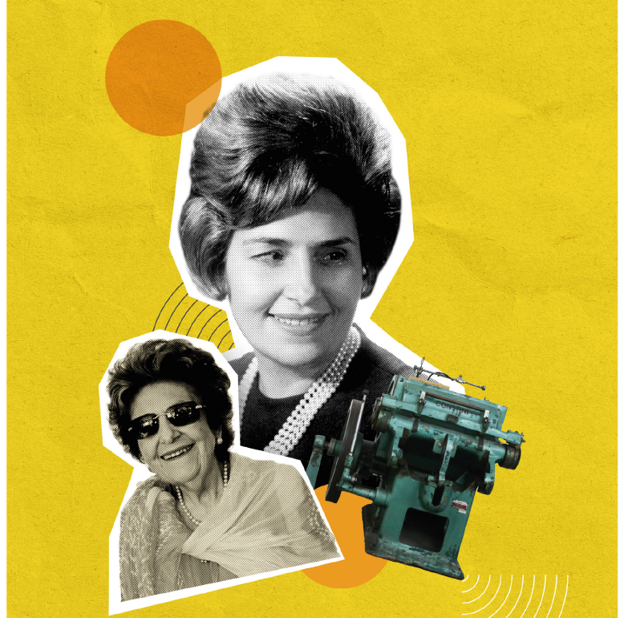
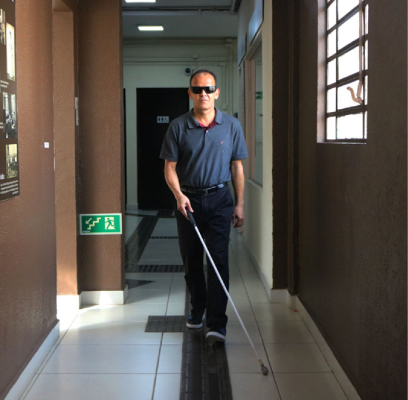
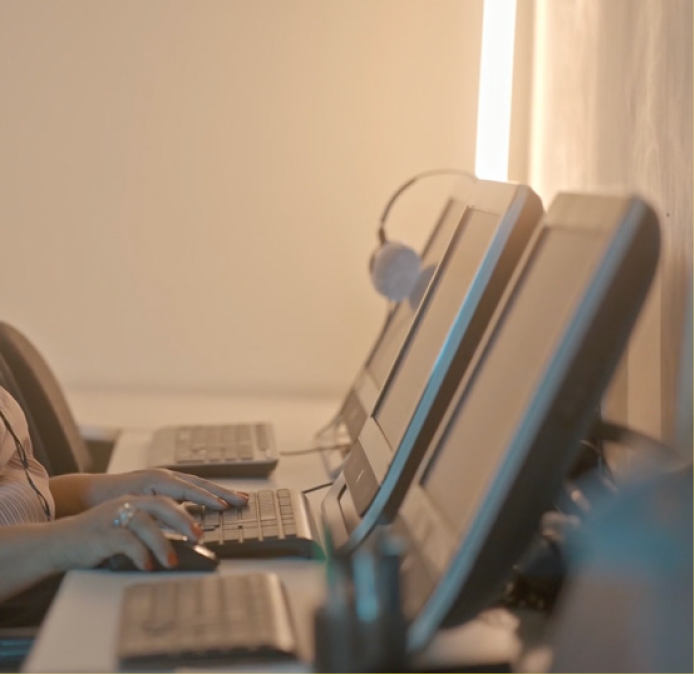
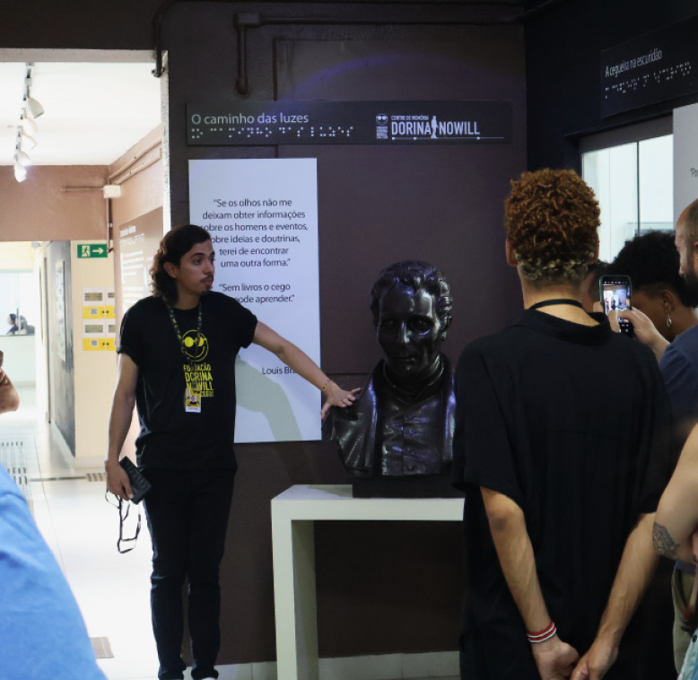
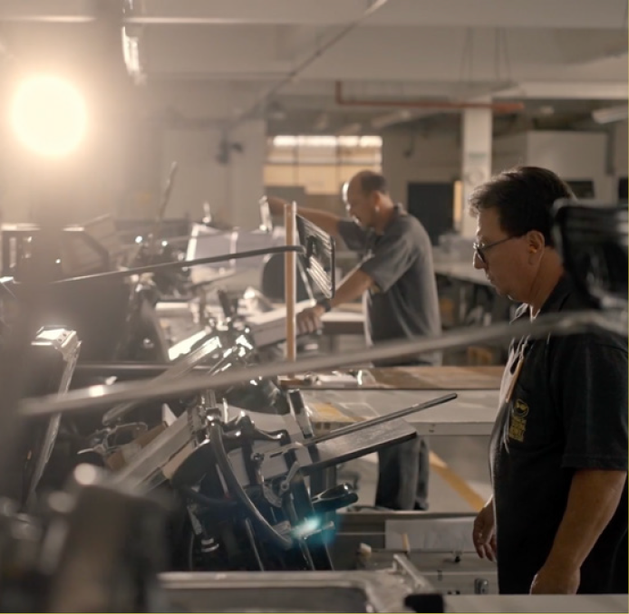
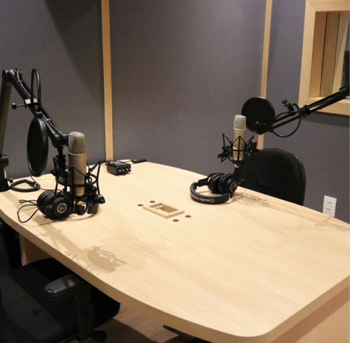
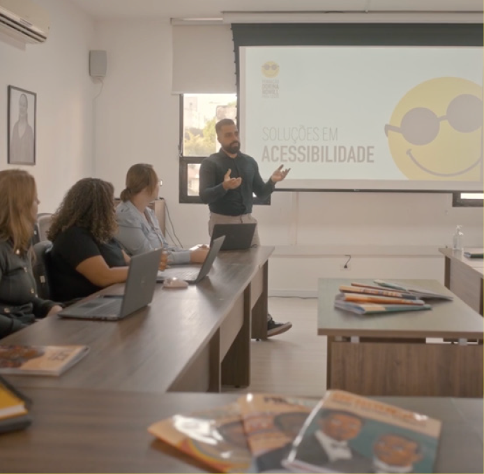
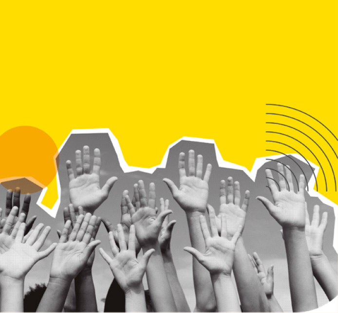
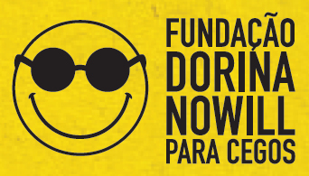

COVER
![Image: Cover. In the center, Dorina Nowill Foundation for the Blind logo, consisting of a yellow emoji with a wide smile and round black glasses; followed by the name. At the top, the text: WE HELP BUILD A MORE INCLUSIVE FUTURE FOR BLIND AND VISUALLY IMPAIRED INDIVIDUALS. In the bottom left, the text: In addition to habilitation and rehabilitation services, we promote initiatives, projects, and services that contribute to greater accessibility, inclusion, and autonomy for blind and visually impaired people. On the right, an illustration of the silhouette of a person with open arms within a circle. Followed by the text: Scan the QR Code to access the ACCESSIBLE VERSION of this material: QR Code. The background is yellow with yellow circles, black dots and curves. End of image.](../resources/images/image_Image12633.png)
Page 1

FUNDAÇÃO DORINA NOWILL PARA CEGOS
Promoting autonomy and independence for blind and visually impaired people, while raising awareness in society about inclusion and accessibility, are the core goals of the Fundação Dorina Nowill para Cegos.
The institution is named after its founder, Dorina de Gouvêa Nowill, who lost her sight at the age of 17 but never gave up on studying and reading. In 1946, she founded the Foundation for the Blind’s Book in Brazil, with the mission of producing books in braille — a mission that continues to this day.
Over the years, the Foundation has modernized, innovated, and evolved across multiple areas of inclusion for this community, from editorial, graphic, and audiovisual solutions to support services for accessibility. It is recognized both in Brazil and internationally for the excellence of its work.
Visit our website to learn more:
fundacaodorina.org.br
Page 2
INCLUSION SUPPORT SERVICES

CARE AND ASSISTANCE
The multidisciplinary teams at the Fundação Dorina Nowill para Cegos offer blind and visually impaired individuals opportunities for a more autonomous and independent life through free services, which are also extended to their families.
Habilitation and rehabilitation services are available to children, youth, adults, and seniors, with no age restrictions, in the following areas:
• Social Work
• Psychology
• Pedagogy
• Occupational Therapy
• Physical Therapy
• Orientation and Mobility
• Ophthalmology
• Orthoptics
COURSES
The courses aim to contribute to the personal and professional development of young people and adults with visual impairments.
Free courses for qualification and specific training are offered to enable students to enter the job market, either as a first opportunity (placement) or as a return to professional activities (re-employment).

To learn more, contact the Inclusion Support Services area:
(11) 5087-0999 – Option 2 | (11) 5087-0998
 atendimento@fundacaodorina.org.br
atendimento@fundacaodorina.org.br
EDUCATION AND CULTURE SERVICE
INCLUSIVE LIBRARY
The Inclusive Library, a reference service for people with visual impairments, promotes access to books and reading in its activity space and also through its digital platform Dorinateca, offering more than 5,000 titles in various formats accessible to visually impaired readers and libraries throughout Brazil.
(11) 5087-0990
biblioteca@fundacaodorina.org.br
Visit our website to learn more:
dorinateca.org.br
Page 3
INCLUSIVE READING NETWORK
![image: Photograph. On the right, a woman with curly hair tied in a bun, wearing a white T-shirt and jeans, and a badge around her neck, stands next to a white wall with the illuminated logo of the Dorina Nowill Foundation for the Blind. In front of her are empty white chairs arranged side by side. On the left, four people sit at white school desks near a rectangular table covered with a yellow and orange tablecloth. On the table are papers and books. In the background, flags are positioned vertically. End of image.](../resources/images/image_Image12721.png)
The Inclusive Reading Network coordinates with education and reading institutions across Brazil, distributes accessible books, and promotes discussions on how to implement accessibility in various spaces. It engages professionals who serve as reading mediators and forms Working Groups with the aim of developing new reading and inclusion initiatives, as well as strengthening existing ones.
(11) 5087-0960
leiturainclusiva@fundacaodorina.org.br
MEMORY CENTER AND GUIDED VISITS

The Dorina Nowill Memory Center, inaugurated in 2002, has the mission of presenting and preserving the history of the struggle of blind and visually impaired people in Brazil and around the world, highlighting the leadership of Dorina de Gouvêa Nowill and her journey leading to the creation of the Fundação Dorina Nowill para Cegos.
The guided visit to the Foundation is free of charge and aims to immerse participants in the universe of accessibility and inclusion.
IMPORTANT: Advance booking is required.
(11) 5087-0955
centrodememoria@fundacaodorina.org.br
EMPLOYABILITY
The Employability area of the Dorina Nowill Foundation connects visually impaired candidates with companies.
It supports blind and visually impaired individuals in building meaningful careers, helping them achieve financial independence and professional growth.
With companies, the goal is to strengthen their role in inclusion and promote affirmative job openings for people with visual impairments. To this end, it offers educational lectures, training sessions, and workshops, either in person or online, depending on the number of participants.
(11) 5087-0953 | (11) 93033-0272
empregabilidade@fundacaodorina.org.br
Page 4
ACCESSIBILITY SOLUTIONS
BRAILLE: EDITORIAL, PRINTING, AND PROOFREADING

Have you ever thought of a form of communication that transcends visual barriers and connects people, knowledge, and experiences through the sense of touch? That’s exactly what the Braille unit does. A reference in the field since its creation, it helps make information accessible to all, promoting inclusion and equal opportunities.
Materials and projects go through braille transcription carried out by our editorial team and are proofread by professionals with visual impairments. Printing is done in our own print shop, ensuring quality and accessibility.
AUDIOVISUAL

The Dorina Nowill Foundation is fully equipped to produce accessible audiovisual materials. From production to finalization, we ensure that every aspect is carefully adapted to the specific needs of your project.
Equipped with state-of-the-art technology, our studios feature highly qualified professionals who prioritize accessibility at every stage to bring your ideas to life.
Services offered:
• Audiobooks recorded with human voice
• Product adaptation for audio
• Recording of educational video lessons and podcasts
• Audio description
• Libras (Brazilian Sign Language)
• Subtitling
DIGITAL EDITORIAL
We offer complete and innovative solutions for converting educational, literary, and other textual materials into digital formats, ensuring full accessibility for people with visual impairments.
Our digital book services strictly follow the best international accessibility practices and guidelines, and meet the requirements of the National Textbook Program (PNLD).
We work with the following formats: HTML5, ePub3, and OEDs.
Page 5
ACCESSIBILITY CONSULTING

Imagine a world where all products, services, and spaces are accessible to everyone, providing an inclusive and engaging experience.
This is the dream of the Dorina Nowill Foundation, and we aim to make it a reality through our Accessibility Consulting services for companies.
• Web Consulting
From developing to the final user experience for people with visual impairments, we ensure that websites and applications are accessible and usable independently and efficiently.
• Architectural Consulting
From project design to execution, all work follows national accessibility guidelines. Every space is validated by a person with visual impairment, ensuring not only technical compliance but also real functionality, inclusion, and practical insights that go beyond the standards.
Talk to our team to make your products and services more accessible. Request a quote*:
(11) 5081-0999 (Option 1)
comercial@fundacaodorina.org.br
(*) All proceeds are directed to the free services provided by the Dorina Nowill Foundation for blind and visually impaired individuals.
TRAINING CENTER

Our course platform is dedicated to providing an inclusive learning environment through accessible content and resources. We believe that knowledge is a right for everyone.
What you’ll find at the Training Center:
• Qualified professionals
• Distance learning platform
• A variety of courses in the field of inclusion
• Customized lectures and workshops, both in-person and online, for companies
Blind and visually impaired individuals registered on Dorinateca have free access to the courses.
Visit the website to learn more:
cursos.fundacaodorina.org.br
Page 6
JOIN US!
VOLUNTEERING PROGRAM

Become a Volunteer at the Fundação Dorina Nowill para Cegos! You can support operational, cultural, educational, and administrative activities, contributing to initiatives that directly impact the people we serve.
We also offer a corporate volunteering option, allowing companies and their employees to actively participate in social actions. This initiative strengthens the commitment to social responsibility, enhances team engagement, and generates a positive impact in the community.
(11) 5087-0971 | (11) 96057-8610
voluntariado@fundacaodorina.org.br
BECOME A DONOR
Make a donation and help transform the lives of people with visual impairments.
(11) 5087-0999 – Option 4
relacionamento@fundacaodorina.org.br
Scan the qr code and donate now:
SPONSORSHIPS AND PARTNERSHIPS
Support the projects of the Dorina Nowill Foundation through Tax Incentive Laws or direct sponsorships. Your company can also contribute by donating products and/or through CRM (Cause-Related Marketing).
(11) 5087-0999 – Option 5
parceria@fundacaodorina.org.br
Page 7

Fundação Dorina Nowill para Cegos
Rua Doutor Diogo de Faria, 558 - Vila Clementino
São Paulo/SP Brazil • ZIP Code: 04037-001
Subway Access
Line 1 (Blue): Santa Cruz Shopping Station
Line 5 (Lilac): São Paulo Hospital Station
+55 (11) 5087-0999 / 5554-0999
fundacaodorinanowill
fundacaodorina
fundacaodorina
FundacaoDorinaNowill
Dorinacast